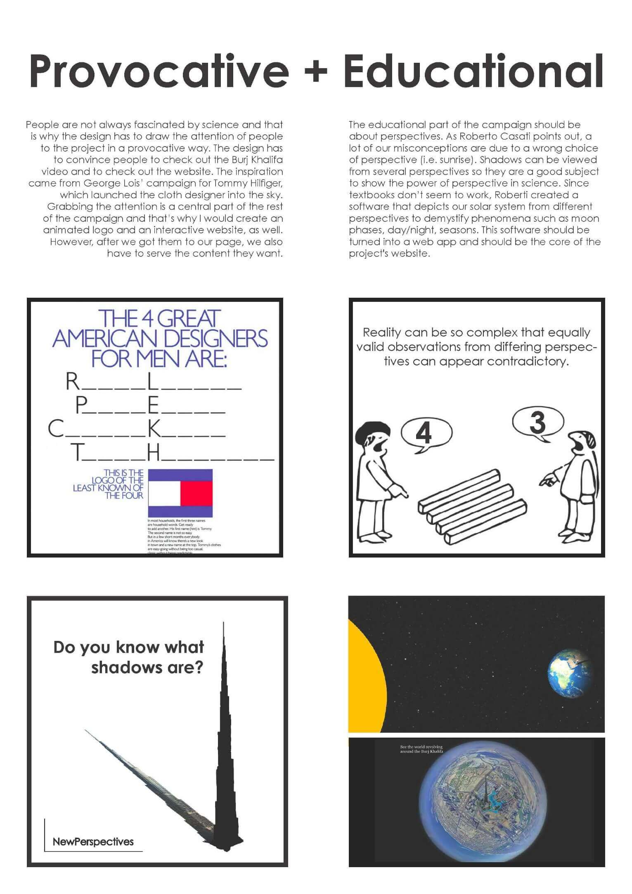
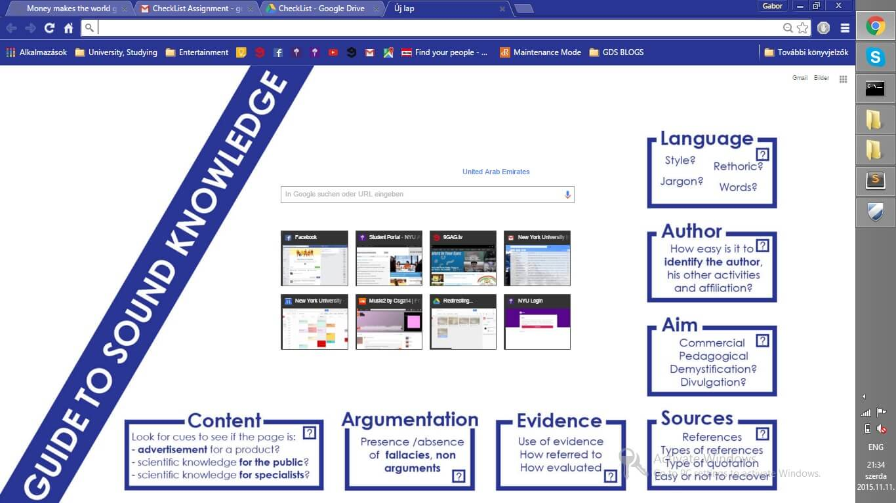
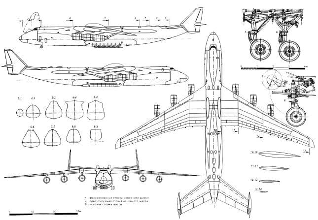
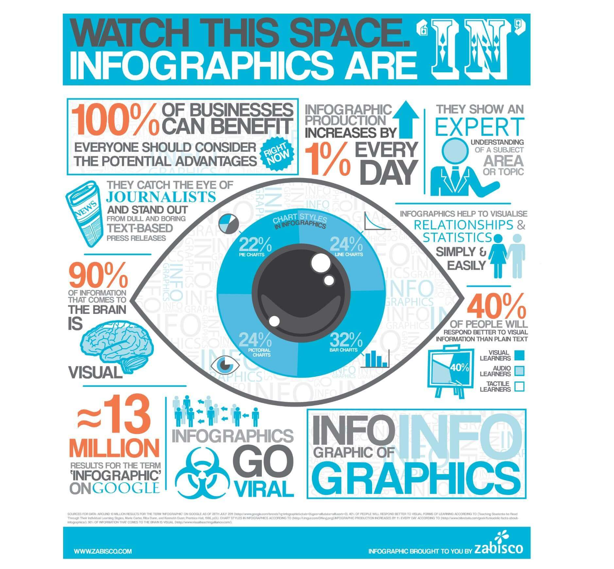
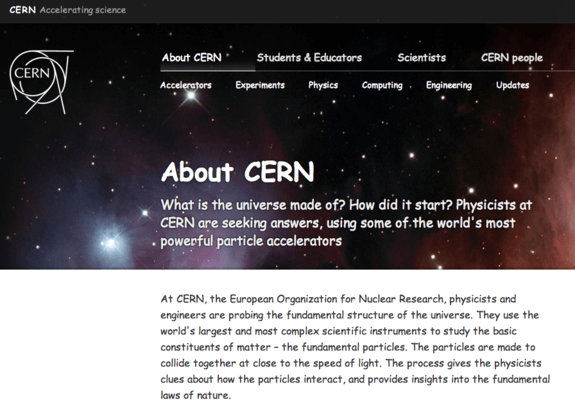
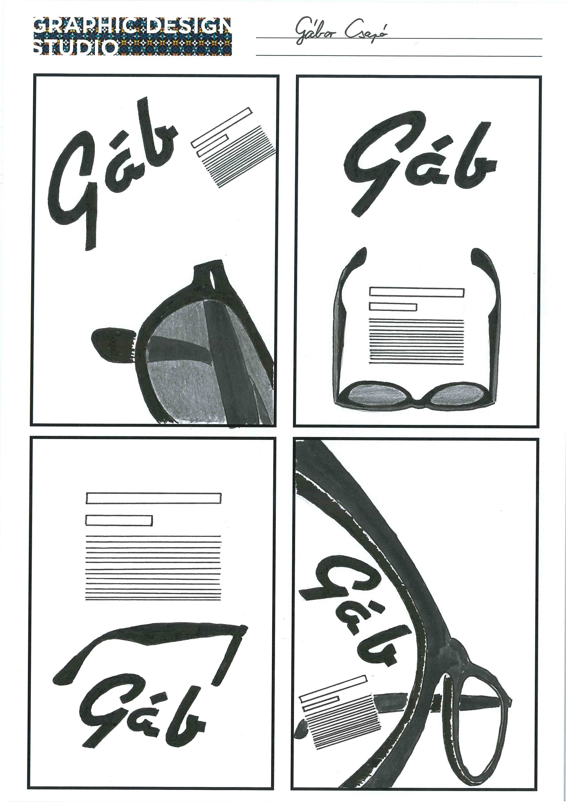

Makerfest in Shanghai
Interaction Lab - Gabor Csapo - 6. Oct. 2016
.
.


Burj Khalifa Presentation
Graphic Design - Gabor Csapo - 26. Nov. 2015
This is the first step in the creation of a campaign for the actual Burj Khalifa. Everybody individually came up with a concept, a mood board (see below) and we presented it in class.
First of all, my mood board. From this exercise I learnt that one can create a good and a bad mood board. Mine was rather bad because while I think I had some good designs , the mood board had a lot of text and the idea didn’t pop enough.
As part of the concept I created an interactive website (Press Space to rotate faster) and a logo animation (reload to watch animation), because they would have been an integral part of my campaign.
Finding the Context
Graphic Design - Gabor Csapo - 16. Nov. 2015
We had an assignment to create a checklist for the things that people have to be careful about when looking for online sources. The easy way to go around this exercise would have been to just create a pretty design and submit that, but I wanted to make it a nit more special. So I started thinking in what context would the checklist be the most useful.
If I just create a pretty design, nobody would care, maybe one person looks at it and then forgets it just as quickly. However, I came up with the idea of creating a Google Chrome Theme centered around the checklist. If you think about it, a browser is the perfect medium for the design as you see the checklist whenever you open the internet to find something. So you’re instantly reminded every time you start looking for information. If somebody wants the theme just email me hahaha…
Design in the Sky
Graphic Design - Gabor Csapo - 2. Nov. 2015
When the word design comes up in a situation, I tend to think about graphic design, logos and posters. However, design is more like a process that can be applied to any kind of creation. After all, designers are not artists but communicators. Recently, I have been flying a lot which always amazed me because of the thoughtful design of every tiny bit of our experience. This short article highlights a couple of details of the design process to give a glimpse into to what extent our experience is engineered. Hopefully next time when you fly, you start to realize and appreciate these little details.
Starting from the very beginning:
The whole process starts with the manufacturing of the aircraft. This is a highly competitive business, since airlines don’t randomly buy their airplanes. If they find one better than other even in the tiniest detail, they will buy that. So the engineers have to find a solution to the puzzle of how to fit as many passengers, food, equipment and storage space in a confined space as possible. In an article of Smithsonian an engineer said: “ It also helps not to put in details that frustrate passengers, like bin latches that don’t seem to cooperate… [It] will open no matter what you do—you can pull out, push in, whatever you do, it opens. ”
The spotless identity
Airlines need to have a spotless reputation and have to communicate security, professionalism, and trustworthiness at all times for two reasons. First, they work in a highly competitive industry, where 20% of the customers give 70% of revenues, so the airlines have to make sure this 20% returns to them when they make the next booking. The second reason is because airlines are technically trapping hundreds of people in a tiny metal cage 30000 feet above the ground. This idea makes a lot of people freak out, so it is important that the passengers feel secure at all times. A good example is Malaysian Airlines, which lost one plane above the Indian Ocean, and another shot down above Ukraine. The company went obviously bankrupt after these two incidents. It is important to focus a lot on security because of the way the public and the media perceives the news of airplane crashes. Airlines spend a lot of money on their appearance, branding and advertisement to keep up this image of professionalism, trustworthiness and security.
Designing the experience
- The first stress point in the experience is the airport. If you think about it, airports became mini cities, with their own transportation systems, restaurants, hotels and designed to serve every need. Recently, I have noticed that airport architecture and the navigation systems are becoming more and more uniform, which makes sure that the traveller doesn’t have to think where to go or what to do next.
- Then comes the boarding, which is very interesting topic by itself, I recommend watching the video below.
- Once flying, everything is there to make sure that the passenger enjoys his flight and make him forget about the cramped legroom and how much they paid for it. The entertainment systems and the beautiful ladies walking up and down are an easy way to keep people occupied, but even the airplane food is carefully designed to the last detail.
+1. On top of all this, as all designers, airlines also have to make sure that they comply with all the norms of the people from different cultures, which includes languages, food and entertainment offerings.
The money making machine
Last but not least, the airlines also have to make as much profit as possible. The aviation industry designed the strategy called yield management, whose little twerks are summed up in this article. Airlines also designed many little psychological tricks to make sure your wallet stays thin. A good example is the frequent flier programs, which gets you hooked up on collecting miles and in the end make you pay more to stay with the same airline.
Closing thoughts
The design process, however, doesn’t end there, since you can also help design your experience by taking your favourite pillow, headphone, headphone jack converter, by working out on the day of travel so that you sleep more easily, by taking sleeping pills, by planning ahead with the timezones, by choosing seats wisely and by considering many more things.
Designing for BackDoor Records
Graphic Design - Gabor Csapo - 2. Nov. 2015
Backdoor records was our second large assignment. We were set the objective to create a logo for this start up record label in Paris. We agreed to present our designs on a webpage, so you can find everything about them here.
Top 10 Infographics
Graphic Design - Gabor Csapo - 11. Oct. 2015
Info graphics are cool!! I'll present my favorite info graphics that I have seen so far.
#10 World Mapper
It's a mind blowing representation of Earth. On this map the area of each country is distorted to reflect statistical data on population distribution, wealth of countries or tourist destinations. You can find out more here.
#9 Daily Routines of Famous People
Have you ever wondered how famous people spent their days? Here's a chart to answer that question.
#8 Places for a perfect sunset picture in NYC?
This web app makes the lives of casual photographers a lot easier, by telling from where can they see the sunset in NYC on a given day.
#7 Migration of Famous People
I don't think I have to explain this since the presentation speaks for itself. Unfortunately, the map is very Eurocentric... I wonder, though, how the map will look like in the future.
#6 John Snow's Cholera Map
No, not the John Snow from Game of Thrones. This one lived in the 19th century London. His plotting of cholera cases changed the medical science for ever.
#5 The Refugee Project
The refugee problem is a very hot topic nowadays and to add to the discussion here is an interactive map that depicts the number of refugees in each country throughout modern history.
#4 Google Big Picture
Google has its own research team for info graphics. They produced some really amazing projects, but unfortunately they only present a few of them on their website.
#3 March on Moscow
{kind=link}
A historical info graphic that really changed my and many other people's perspectives on the Napoleon invasion of Russia.
#2 Tree Map of Economic Complexity by MIT
To most people, it might be super boring. But people who like economics or international politics can spend hours looking through what countries produce. I recommend to check out Russia to see a country, whose economy is based on mining only. About 80% of it's export are mining related, which makes it very vulnerable to price changes of natural resources. Or Bangladesh, which is focused on the textile industry. On the other hand, there is for instance Germany with the most diverse economy. Also there is Slovakia and Hungary, where 0.6% of all exports are toilet papers. You can discover many other interesting facts if you give it a try.
#1 Gapminder
Just click on the link and watch video. It's amazing.
To finish off, here's an info graphic that proves info graphics are cool.
{kind=link}
Beginner Webdesign
Graphic Design - Gabor Csapo - 11. Oct. 2015
The area of design that I’m most interested in the moment is web design. Currently I’m taking a class that teaches us to mash up sources of information on the internet into a new website. It focuses more on the technical side, but I also want to develop my design skills so I made for myself and other people this little guide about what I consider the principles of modern web design.
“Ruthless simplicity”
Flat and minimalistic design became basically the standard in the industry. If you don’t know about it just google it and you’ll find some great professional resources on the topic.
One new development in the topic is the usage of universal icons. Icons are usually shorter than words and easier to recognize. If we develop universal signs like the little house figure for “Home” or the 3 lines as a menu button, websites can be further simplified making those minimalist people happier.
My other advice is to keep the site structure as simple as possible, with the least amount of pages and streamlined navigation. Too many options ensure NONE will be chosen. A good example for this principle are the long scroll pages, which are several pages stitched together and you just have to scroll through them. These long scroll pages are also good to tell stories (Great Example).
One another new area in the topic is Google’s Material Design, which brings in a more detailed design but keeping the clean look.
And if I mentioned all these mainstream ideas in this bullet point I cannot forget about responsive design either. Again there are other people who can explain this much better than me.
Engage and interact
Try to engage your reader with the content through little games, or story telling. It makes your website instantly stand out. One way is to create an app like interface with sliding panels and cool animations.
Here’s a fake button to make you think there is interaction on my blog. Do not click on it!
Design common sense
A typeface can transform the whole world. Ok, not the world but your website definitely. A good typeface can make a huge difference in whether your site is cool or not.
Use visual hierarchy to highlight what is important to your reader. You can always bet on the fact that nobody is actually reading your website. They’re just skimming it for useful information. So you should put the most important pieces of information in their faces with frames, enlargement, using colors, or by blurring unimportant things…
When building a website look for 3-4 colors using basic color theory (Adobe can help) that fit together, decide on their roles and stick to it consistently.
But you also have to design your content consciously. Write for your audience, be concise, and make sure your framing correctly what you’re saying. I.e. “You can save $30 by signing up,” is weaker due to people’s loss aversion than, “You’re losing $30 if you don’t sign up.”
Graphic Design - Gabor Csapo - 26. Sept. 2015
Drawing Practice
Fundamentals of Design: Creativity
Graphic Design - Gabor Csapo - 12. Sept. 2015
We can all agree that creativity is an essential part of design, which everybody has to utilize to the fullest. But first of all what is creativity and where does it come from? Only after answering that question, can we make a conclusion about how to design more creatively…
I became more indulged in creativity last semester, when I took the class “Creativity and Innovation” with Prof. Douglas Cook. The general definition is that creativity is the use of original ideas to create something new. This definition, however, is useless when it comes to understanding the actual “thing” and it doesn’t say anything about how to develop it. I write “thing” instead of creativity, because we have no idea what creativity actually is. My course tried to define what this mysterious phenomenon was using countless mind exercises, but the term just became more and more complicated. We learned how it might be a personality trait, we went into psychology studies and had to develop our own projects to see how we felt about creativity and to discover it by ourselves. Towards the end of the class, we agreed that creativity is not some kind of magic or alien talent that you have to be born with. It is true that some people seem to be born talents, but creativity can be obtained through years of hard training of you brain.
It is possible, because creativity is a way of thinking in my opinion. Creative people might have just developed this way of thinking early on in their lives, but this also means that anybody can learn it. Developing your creative side is not that easy though, since you have to overcome the thinking habits that are hard-wired into your brain.
You should always think about a different way to approach a problem, and you don’t have to think about something big. Start with everyday tasks that are normally just convenient to complete in the usual way such as writing an essay, doing an assignment or just going to the dining hall. This way you can rewire your brain and your thoughts to think more creatively all day every day. If you look at creative people, their creativity is not just a switch they can turn on and off, but creativity has become their lifestyle.
Ok, cool! Now that you can come up with creative solutions, you just need problems to solve… This is actually the harder part. Innovations all start with finding a problem that was waiting to be solved or by finding boundaries that were taken as the status quo earlier. It is again about training your brain not to ignore but to identify, and to seek problems and then to automatically start to think about solutions even if it’s the most ridiculous stuff like a bonfire for the coldness in the classrooms. Also a good advice in many cases is to put your problem in a full English (or whatever language) sentence that makes sense, because sometimes a clear problem makes the solution also clear.
In the end, it all comes down to your willingness to actively work on your creative abilities. However, there is a secret shortcut, which makes the whole process much easier: good attitude!! Everybody has a baseline creativity, which can instantly be increased once you stop thinking that you’re not creative.